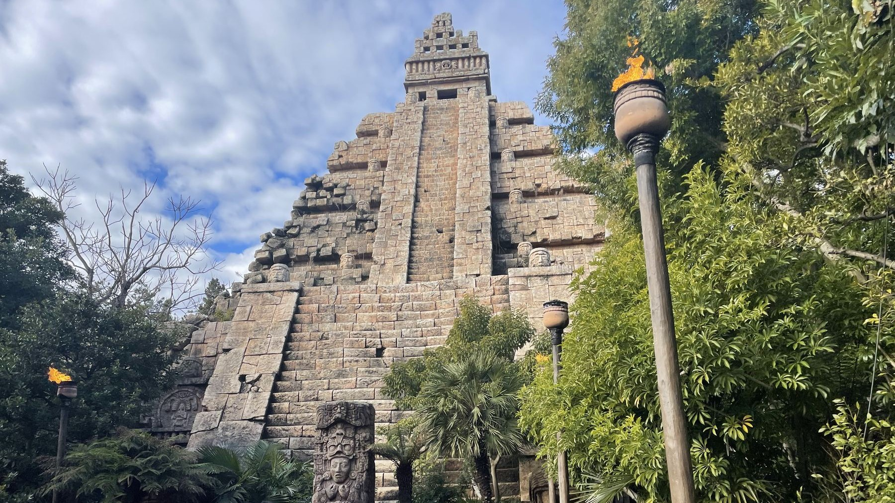
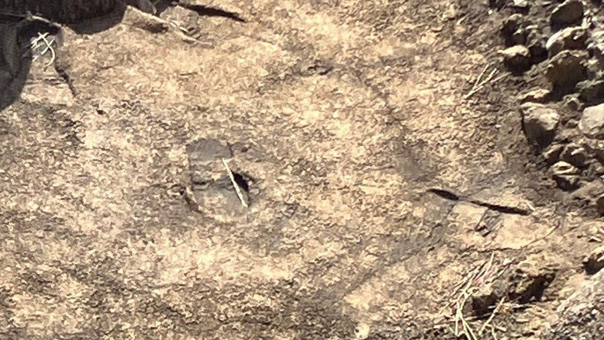
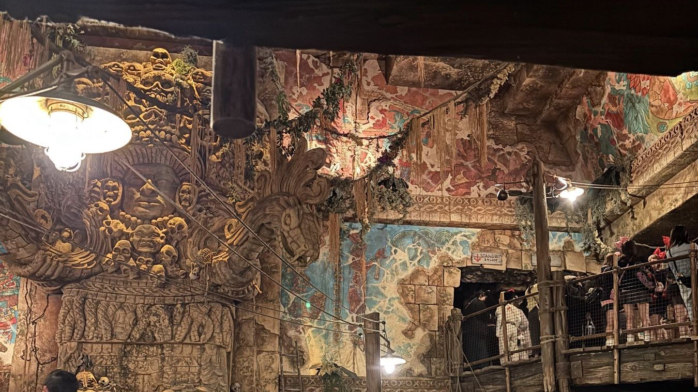
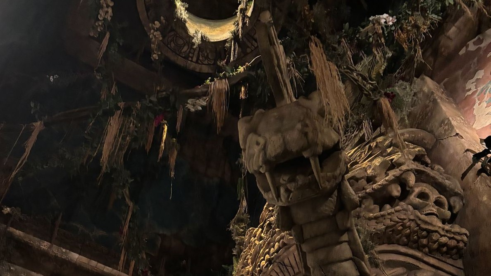

Indiana Jones
若さの泉を守る守護神と、冒険家が遺した足跡
I. 失われた河の伝説
1930年代、中央アメリカの密林を流れる河のほとりに、ロストリバーデルタの発掘現場が広がっています。河が姿を現したのは1880年代。大ハリケーンでせき止められていた川があふれ、森の奥に「エル・リオ・ペルディード」、失われた河が現れました。
この河の出現によってジャングルが切り拓かれ、探検家や一攫千金を狙う冒険家たちが続々と拠点を築き始めます。その中で、考古学者インディ・ジョーンズ博士は、神聖な神殿に隠された禁断の伝説「若さの泉（Fountain of Youth）」の存在にたどり着いたのです。私たちは、彼の助手であるパコが主催する「若さの泉を探す魔宮ツアー」の観光客として、この神秘的な地へ足を踏み入れることになります。
📻 ラジオが伝える若さの泉
飲めば永遠の若さを得られるという泉を、人々は何百年も探し続けてきました。その泉が古代神殿で見つかったと、ジャングルのラジオが速報を流します。古代文字を解き、罠を抜けて泉にたどり着いたのはジョーンズ博士だといいます。助手のパコは、そこへ客を案内する魔宮ツアーを始めました。
放送には、ツアーの参加者への警告も続きます。神殿の守護神クリスタルスカルの怒りを買えば、命を落とすというのです。
神殿のそばを離れても、ユカタン・ベースキャンプ・グリルや蒸気船の待合室で、同じラジオが聞こえてきます。密林の奥まで届く電波は頼りなく、ニュースの合間にラテン音楽や怪しげな商品の宣伝が流れます。
II. 脱出用水上飛行機と、インディ博士の「足跡」
ロストリバーの岸辺には、水上飛行機が一機浮かんでいます。インディ博士がこの地へやってきたときにも、危険を逃れて飛び立つときにも使った機体です。翼の下から機体に沿って目を移すと、文字が見えます。
✈️ 機体に残る文字
機体の文字から連想されるのは、『スター・ウォーズ』のドロイド「C-3PO」の名です。映画の水上飛行機の登録番号も「OB-C3PO」だったという説があります。ここで読み取れるのは、二つの名の響きがよく似ていることまでです。

水面から岸へ目を移すと、粘土質の地面にインディ博士のブーツの跡がひとつ残っています。水上飛行機を降り、急いで神殿へ向かった博士が、柔らかな泥を踏んだ跡です。
III. 魔宮の罠と「生贄の祭壇」
観光用ジープに乗り込んだ私たちは、ジョーンズ博士の警告「守護神クリスタルスカルを怒らせるな！」という言葉もむなしく、魔宮の最深部へと迷い込んでしまいます。行く手を阻むのは、何千年も張り巡らされた古代の防衛システムと、クリスタルスカルの呪いです。


骸骨と大蛇に囲まれた部屋に入ると、天井から蔦が垂れ、石壁に赤や青のフレスコ画が見えてきます。生贄の儀式を描いた絵が残るここは、古代の人々が神に捧げ物をしたという「生贄の祭壇（Altar of Sacrifice）」です。祭壇を過ぎるころ、ジープは制御を失います。守護神の気配が迫り、行く手には巨大な岩が転がり落ちてきます。
IV. 歴史への敬意とハイタワー三世をめぐる考察
ジョーンズ博士の足跡を離れ、隣の遺跡「レイジングスピリッツ」へ歩くと、別の探険家の名が目に入ります。
木箱にあるのは「HOTEL HIGHTOWER」の文字です。海を隔てたアメリカンウォーターフロントのホテル・ハイタワーには、主人がロストリバーデルタを探険する姿を描いた壁画があります。密林の木箱とニューヨークの壁画に、同じ旅の両端が見えてきます。
🔎 二人の探険家が遺したもの
古代文字を読むジョーンズ博士と、世界各地で収集した品々をホテルに並べたハイタワー三世。遺跡に残る足跡とホテルの収蔵品を見比べると、過去に触れた二人の手つきの違いが浮かびます。